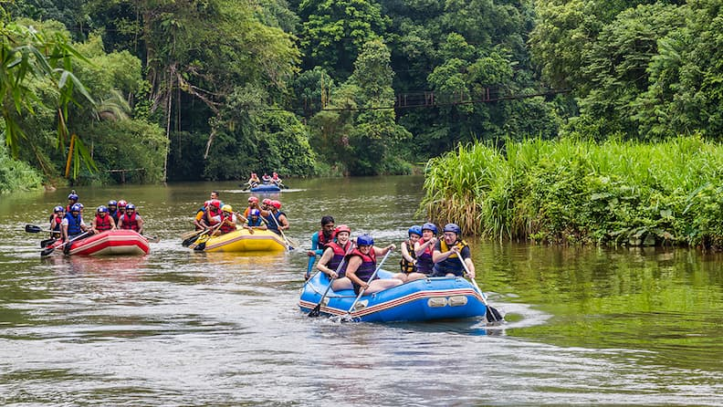
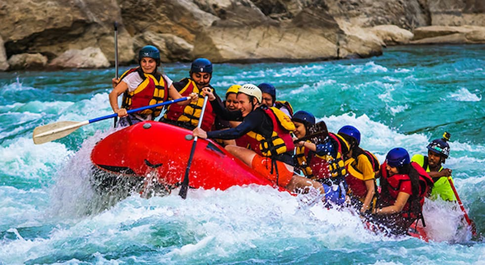
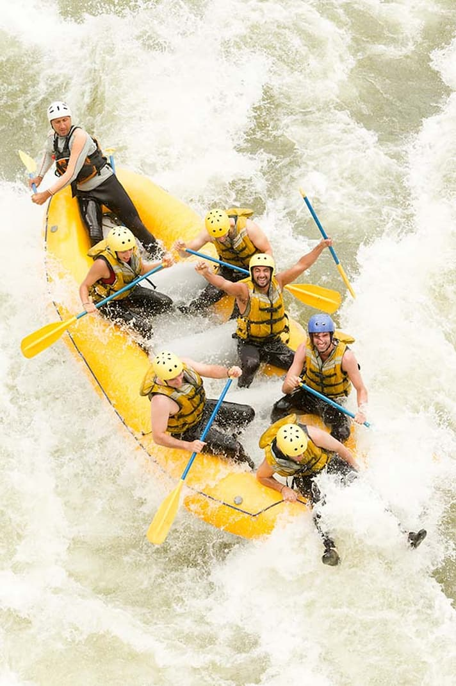

Passeio Iniciante
Ideal para quem está descobrindo o rafting. Percurso de 5 km em corredeiras de grau 2, com duração de aproximadamente 1h30. Inclui colete, capacete e guia especializado.
Escolheu seu passeio favorito? Entre em contato e faça sua reserva!
Fale Conosco
Ideal para quem está descobrindo o rafting. Percurso de 5 km em corredeiras de grau 2, com duração de aproximadamente 1h30. Inclui colete, capacete e guia especializado.

Para quem já tem alguma experiência. Percurso de 10 km em corredeiras de grau 3, com duração de aproximadamente 2h30. Inclui todos os equipamentos e fotos do passeio.

Para os mais experientes. Percurso de 15 km em corredeiras de grau 4, com duração de aproximadamente 4h. Inclui equipamentos completos, fotos e almoço na margem do rio.
| Passeio | Nível | Distância | Duração | Preço |
|---|---|---|---|---|
| Iniciante | Grau 2 | 5 km | 1h30 | R$ 120,00 |
| Intermediário | Grau 3 | 10 km | 2h30 | R$ 190,00 |
| Aventureiro | Grau 4 | 15 km | 4h | R$ 280,00 |